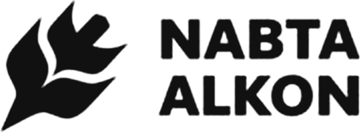

Nabta Alkon · العرض الرسمي · أكتوبر 2026

فهم المشروعمخلفاتكم، مشروعكم الصناعي القادم
وحدات للانحلال الحراري وشراكات تحوّل مواد مختارة إلى منتجات ذات قيمة.

Nabta Alkon · العرض الرسمي · أكتوبر 2026

فهم المشروعوحدات للانحلال الحراري وشراكات تحوّل مواد مختارة إلى منتجات ذات قيمة.
01 / العرض
إما أن تشتروا وحدة، وإما أن تبنوا شراكة. ويحدد العقد من ينفّذ ومن يشغّل ومن يبيع.
المعدات والخدمات المشمولة في عرضكم، مع ميزانية ومراحل للاستلام.
مشروع مشترك: المساهمات والمسؤوليات والإيرادات وشروط الخروج تُحدَّد معًا.
تجهيز الموقع ودمج المعدات وتنظيم التجارب.
تشغيل الوحدة وصيانة المعدات ومتابعة الإنتاج.
تحديد الجودة والتعبئة التي يتوقعها المشترون.
اختياري: دراسة جدوى وتحاليل للمواد ومرافقة.
يوضح عرضكم من يركّب ومن يشغّل ومن ينظّم المبيعات.
الأساس: العرض كما وصفته Nabta Alkon. تُحدَّد الخدمات والمسؤوليات والالتزامات في العرض التعاقدي.
02 / فهم العملية
تُسخَّن المادة دون إمداد بالأكسجين، ثم يُستخلص منها سوائل وغاز ومادة صلبة.
الفرز وضبط الحجم وتجهيز المادة.
تسخين المادة داخل مفاعل.
تبريد الأبخرة وتجميع المنتجات.
زيت الانحلال الحراري لاستخدام صناعي محدد؛ ويُحدَّد توصيف الغاز والمخلفات الصلبة لاحقًا.
الفحم الحيوي والغاز والسوائل: يعتمد توزيعها على المادة والعملية المختارة.
الفحم الحيوي: فحم نباتي المصدر غني بالكربون المستقر. وعند استخدامه في التربة أو المواد، فإنه يخزّن الكربون على المدى الطويل.
يعتمد المنتج الناتج على المادة المختارة والعملية المعتمدة.
[R5] IEA Bioenergy · العملية ↗ · [R8] Puro.earth · منهجية الفحم الحيوي ↗
03 / الميزانية
تُبنى الميزانية بحسب مادتكم وموقعكم والمنتجات التي ترغبون في تسويقها.
الميزانية المرجعية التي أعلنتها Nabta Alkon.
معيار للتخطيط، مقسّم هنا إلى أربع حزم، ويُؤكَّد في العرض.
الميزانية بالتفصيل · 4 حزم
تحضير المادة، المفاعل، التكثيف والفصل، معالجة الغاز، نظام التحكم.
المبلغ: ≈ 1.65 مليون يورو · 55%الأرض، الأعمال المدنية والأرضية الخرسانية، توصيلات المياه والطاقة، الطرق المؤدية.
المبلغ: ≈ 0.35 مليون يورو · 12%التعبئة في حاويات، الشحن، التجميع، التجارب، التدريب والتشغيل الفعلي.
المبلغ: ≈ 0.55 مليون يورو · 18%الدراسات والتراخيص والتأمين وهامش للطوارئ.
المبلغ: ≈ 0.45 مليون يورو · 15%الـ 3 ملايين يورو أساس للتخطيط: يجب تسعير كل حزمة في عرض الأسعار.
الأساس: تخطيط Nabta Alkon. توزيع إرشادي وفق النسب المعتادة للمشاريع الصناعية؛ وتُحدَّد المبالغ والاستثناءات وجدول الدفعات في عرض الأسعار.
04 / الجدول الزمني
هدف إرشادي: من التصنيع إلى التركيب. يُجهَّز الموقع أثناء شحن الوحدات.
إنتاج الوحدات وفحصها.
حماية المعدات وتحميلها.
التصدير إلى بلد التنفيذ.
استقدام فريق التجميع.
تجميع الوحدات وربطها.
مدة كل مرحلة · الهدف الإجمالي الإرشادي: 8 أشهر
المدة غير معلنة
التصنيعالنقل، مع تجهيز الموقع بالتوازي
التعبئة في حاويات · الشحنالتجميع بعد وصول الوحدات إلى الموقع
حشد الفريق · التركيبأعمال الحفر والأرضية والشبكات؛ والبنية التحتية والمرافق بحسب الموقع
تجهيز الموقع أثناء شحن الوحدات يساعد على تنسيق الأعمال.
الأساس: معلومات Nabta Alkon. مدة التصنيع غير معلنة؛ وتُدرج الدفعات والتراخيص والفحص قبل الشحن في الجدول الزمني.
05 / مقارنة العروض
يتوقف اختياركم على التكلفة الكاملة وجودة المنتجات والمتابعة المقررة بعد التركيب.
المادة والطاقة الاستيعابية والعملية مترابطة في نطاق عمل مكتوب.
الخدمات والاستثناءات ومراحل الدفع محددة.
التشغيل الفعلي والصيانة والفحوص موضحة في العرض.
قارنوا المادة نفسها والخدمات نفسها ومستوى المتابعة نفسه.
[R6] QMRE · عرض 2023، ص. 4 ↗ · [R7] carboliq · العملية والمنافذ ↗
06 / السوق والمشترون
تحديد المشتري والتحقق من المنتج جزء من المشروع الصناعي منذ مرحلة التحضير.
استثمار مع حق أولوية في شراء الزيت من مصنع سكيفه في الدنمارك.
بالأطنان في كل ربع سنة · 341 طنًا على مدار السنة
بعد بداية بطيئة (6 أطنان)، نحو 110 أطنان من الزيت في كل ربع سنة.
من زيت مصنع طاقته 20,000 طن/سنة تشتريه Shell على عدة سنوات، ابتداءً من يونيو 2026.
يعرف المصنع لمن سيبيع زيته قبل أن يبدأ الإنتاج أصلًا.
كيف تكونون من الرابحين
إمداد منتظم بموجب عقد.
زيت يستوفي مواصفات المشتري.
عقد شراء قبل البناء.
الرابحون يؤمّنون المادة والجودة والمشتري قبل البناء.
[R1] BASF · 7 أكتوبر 2019 ↗ · [R2] Pryme · تقرير الربع الرابع 2024 ↗ · [R10] Shell × RES · 2025 ↗
07 / الكربون والتتبّع
تخضع الكتلة الحيوية والبلاستيك لآليات مختلفة. ويُعدّ اعتمادهما منذ مرحلة الدراسة.
يمكن اعتماد إزالة الكربون إذا استوفت المنهجية والقياسات واستخدام الفحم الحيوي المعايير.
تنظّم ISCC PLUS التتبّع وميزان الكتلة. وهذا الاعتماد ليس رصيدًا من CO₂.
لمدة 10 سنوات على الأقل: اتفاقية Exomad Green × Microsoft المعلنة في مايو 2025.
تُظهر هذه الاتفاقية أن كبار المشترين يلتزمون لمدة 10 سنوات. وقد ارتفع سوق الفحم الحيوي من 14.6 مليون دولار في 2022 إلى 181.5 مليون دولار في 2024. وتدخل وحدة الكتلة الحيوية هذا السوق مورّدًا لأرصدة معتمدة، بحجمها، متى جرى التحقق من المنهجية.
يسلك الفحم الحيوي والبلاستيك مسارين مختلفين. ولا إيرادات كربونية في السيناريو.
[R3] Carbonfuture / Exomad · 21 مايو 2025 ↗ · [R4] ISCC PLUS · المعيار ↗ · [R8] Puro.earth · منهجية الفحم الحيوي ↗ · [R11] CDR.fyi · الفحم الحيوي ↗
08 / سيناريو البلاستيك
مثال لفهم الحساب: تُحتسب إيرادات الزيت فقط.
البلاستيك المعالَج فعليًا.
النسبة المفترض تحويلها إلى زيت.
سعر البيع المفترض للزيت.
3,000 طن × 60%
1,800 طن × 500 يورو/طن
تفترض مبيعات 900 ألف يورو معالجة الكميات المخططة وبيعها بالسعر المعتمد.
الأساس: سيناريو توضيحي مقدَّم. أُعيد حساب الأرقام في 24 أكتوبر 2026؛ والفرضيات تحتاج إلى تأكيد للموقع.
09 / النفقات
تموّل المبيعات التشغيل. ثم يُخصَّص احتياطي سنوي للاحتياجات المستقبلية.
الرصيد بعد الاحتياطي، قبل الضرائب والتمويل.
900 − 600 − 50 = 250 ألف يورو المبيعات − التكاليف − الاحتياطي السنوي
يبقى 250 ألف يورو/سنة في السيناريو، قبل الضرائب والتمويل.
الأساس: سيناريو توضيحي مقدَّم. أُعيد حساب الأرقام في 24 أكتوبر 2026؛ والفرضيات تحتاج إلى تأكيد للموقع.
10 / قراءة العائد
مع 250 ألف يورو ثابتة سنويًا، يُسترد 1.75 مليون يورو في سبع سنوات، ويتبقى 1.25 مليون يورو للاسترداد.
طلب تفرضه القوانين. ابتداءً من 2030، يجب أن تحتوي عبوات البلاستيك المباعة في الاتحاد الأوروبي على 10 إلى 35% من المواد المعاد تدويرها.
سوق كربون في نمو. الفحم الحيوي: 181.5 مليون دولار في 2024 مقابل 14.6 مليون دولار في 2022.
إيرادات غير مقدَّرة. الغاز والمخلفات الصلبة وأرصدة الكربون تساوي صفرًا في هذا السيناريو.
السيناريو متحفّظ: فهو يتجاهل الطلب التنظيمي وإيرادات الكربون.
الأساس: سيناريو توضيحي مقدَّم، أُعيد حسابه في 24 أكتوبر 2026. [R9] اللائحة (الاتحاد الأوروبي) 2025/40 ↗ · [R11] CDR.fyi · الفحم الحيوي ↗
11 / اختبار الفرضيات
يحدد سعر الزيت وكلفة الموظفين والكمية المعالَجة فعليًا الرصيد السنوي.
لاستهداف 4 سنوات: رصيد مطلوب قدره 750 ألف يورو/سنة.
≈ 599 يورو/طنلاستهداف 7 سنوات: رصيد مطلوب قدره 429 ألف يورو/سنة.
بسعر 500 يورو/طن مع 300 ألف يورو للموظفين: 42.9 سنة.
السعر الأعلى يحسّن الحساب؛ ويجب بعد ذلك تثبيته بعقد.
الأساس: سيناريو توضيحي مقدَّم. أُعيد حساب الأرقام في 24 أكتوبر 2026؛ والفرضيات تحتاج إلى تأكيد للموقع.
12 / أسئلة وأجوبة
لفهم ما تقوله الأرقام والشروط التي تغيّرها.
مع استثمار 3 ملايين يورو و250 ألف يورو ثابتة سنويًا: 12 سنة للاسترداد البسيط. وبعد سبع سنوات يتبقى 1.25 مليون يورو من المبلغ المستثمر.
اطّلعوا على الحساب ←ببيع الزيت إلى شركات صناعية تشتريه بالفعل: BASF في ألمانيا، وSHELL في هولندا وإيطاليا، وLYONDELLBASELL، وSABIC.
الدول المستفيدة: الاتحاد الأوروبي، حيث تصبح المواد المعاد تدويرها إلزامية في 2030، والدول التي ينتهي فيها البلاستيك في المكبات. ويحتسب المثال الزيت فقط.
اطّلعوا على المبيعات ←عند تشغيل بنسبة 75%، ينخفض الرصيد إلى 122.5 ألف يورو/سنة. وعند 50% يبلغ −5 آلاف يورو/سنة في هذا النموذج.
اطّلعوا على العوامل ←ربحية الوحدة ودخل الشريك حسابان مختلفان.
الأساس: سيناريو توضيحي مقدَّم. [R10] Shell × RES ↗ · [R12] BASF × ARCUS ↗ · [R13] OECD · البلاستيك ↗ · [R9] اللائحة (الاتحاد الأوروبي) 2025/40 ↗
13 / أسئلة وأجوبة
العرض المقنع يربط كل التزام بدليل وبمسؤولية.
3 ملايين يورو لطاقة 10 أطنان/يوم، موزعة على 4 حزم مسعَّرة في عرض الأسعار؛ 8 أشهر مستهدفة؛ ودفعات مرتبطة بمراحل الاستلام.
اطّلعوا على خطة التنفيذ ←الفحم الحيوي: اعتمد الاتحاد الأوروبي في فبراير 2026 أولى قواعد اعتماد إزالة الكربون الدائمة [R14]. هدف الاتحاد الأوروبي لعام 2040: خفض الانبعاثات الصافية بنسبة 90%، وبما يصل إلى 5% عبر أرصدة دولية [R15]. البلاستيك: تتبّع فقط، ولا إيرادات كربونية في النموذج.
اطّلعوا على CO₂ ←يُثبَت الالتزام كتابةً: عرض أسعار لكل حزمة وجدول زمني وجدول دفعات موقّعة.
الأساس: العرض كما وصفته Nabta Alkon؛ والالتزامات تُؤكَّد في العرض التعاقدي.
[R6] QMRE · 2023 ↗ · [R14] المفوضية الأوروبية ↗ · [R15] المجلس الأوروبي · 2040 ↗
14 / بناء ما بعد ذلك
مع Nabta Alkon، أعدّوا عرضًا يربط مواردكم بالمعدات والمنتجات المراد بيعها.
العودة إلى البداية ←النوع والمصدر والجودة
الحجم والانتظام
المكان وسهولة الوصول والطاقة
المنتج والاستخدام والميزانية المتاحة
شاركونا هذه المعطيات الأربعة لإعداد عرضكم.
Nabta Alkon / التعمّق، نقطة بنقطة
الفرضيات نفسها، مع الحسابات والمخرجات وأسس القرار بالتفصيل.
المادة الداخلة والعملية وجودة المخرجات.
عرض ←الكميات والاستثمار ومراحل التنفيذ.
عرض ←المبيعات والتكاليف والاسترداد وعتبات النموذج.
عرض ←المسؤوليات والمنافذ والاعتماد.
عرض ←3 ملايين يورو في البداية · 3,000 طن/سنة · 60% زيت · 500 يورو/طن · رصيد 250 ألف يورو/سنة
إطار توضيحي. وسيتيح عرض الأسعار والاختبارات على المادة والعقود بناء الحالة الفعلية.
Nabta Alkon / المواد
يوجّه تركيب المادة وانتظام التوريد العملية والتكاليف وجودة المنتج.
فئات البلاستيك أو الكتلة الحيوية؛ والخلائط والمواد الغريبة.
ما يهيئه ذلكاختيار المسار وتوافق العملية.
الماء وحجم الجسيمات والتحضير اللازم.
ما يهيئه ذلكالفرز والتقطيع والتجفيف والتغذية.
تحاليل مناسبة للتيار: المواد الخاملة والرماد والملوّثات المستهدفة.
ما يهيئه ذلكمعالجة المخرجات ومواصفاتها.
الأطنان المتاحة والموسمية والمسافات والموردون.
ما يهيئه ذلكخطة التوريد والتكلفة عند التسليم.
المخرَج: بطاقة للمادة وخطة للتحاليل. وتُحدَّد عتبات القبول مع العملية المختارة والاستخدام المقصود، انطلاقًا من عيّنات ممثِّلة.
Nabta Alkon / سلسلة التحويل
تحوّل الحرارة المادة. وتُبرَّد الأبخرة؛ ويتبع الغاز والمواد الصلبة دوائرها الخاصة.
الفرز والتقطيع وضبط الرطوبة بحسب الحاجة.
التسخين والتحكم في زمن المكوث.
يُستخدم الغاز بحسب التهيئة. وتُعاد هذه الحرارة إلى المفاعل.
التبريد والتوصيف والتعبئة.
التكثيف إلى سائل ثم الجمع.
المعالجة والتوجيه إلى الاستخدام المقصود.
مخطط وظيفي مبسّط. يرافق العمليةَ الوزنُ وتتبّع الدفعات والصيانة ورصد الانبعاثات. والغاز المستخدم في التسخين يقلّل حاجة من الطاقة؛ ولا تُحتسب قيمته مرتين.
المصدر: [R5] IEA Bioenergy · العملية ↗
Nabta Alkon / جودة المنتج
يُباع المنتج بجودة محددة وفحوص واستخدام معروف.
مادة أولية لمشترٍ صناعي متوافق.
الأساس قبل التسليمبطاقة المنتج وتحاليل مستهدفة والتخزين ومعايير القبول.
تطبيقات تتوافق مع جودة الدفعة والإطار المحلي.
الأساس قبل التسليمالمصدر والتركيب والجودة، وملف الاعتماد إذا كان مستهدفًا.
استخدام داخلي أو منفذ محدد بحسب العملية.
الأساس قبل التسليمالتوصيف والمعالجة وشروط التثمين أو الإدارة.
قد يحتاج زيت الانحلال الحراري إلى تنقية بحسب الاستخدام المختار. والفحم الحيوي الناتج من الكتلة الحيوية والمخلفات الصلبة للبلاستيك ليسا المنتج نفسه. وتبقى المنتجات الثانوية خارج إيرادات النموذج.
Nabta Alkon / الطاقة الاستيعابية والتشغيل
تُقرأ الطاقة الاستيعابية للسيناريو على أساس زمني واحد، ثم تُعدَّل بحسب الاستخدام الفعلي.
الإنتاجية اليومية للسيناريو.
الأساس السنوي المعتمد.
الطاقة السنوية المعتمدة في الحساب.
نسبة الوقت المبرمج التي تكون فيها الوحدة قادرة على العمل.
الأطنان المعالَجة فعليًا / 3,000 طن. وهي تعكس أيضًا التغذية والتنظيم.
مثال للتحويل فقط: 10 أطنان/يوم على مدى 24 ساعة = 0.417 طن/ساعة. وتبقى ساعات التشغيل الفعلية بحاجة إلى تأكيد. ويغيّر النموذج الحجم بمعامل استخدام إجمالي واحد: فلا تُخصم التوقفات نفسها مرتين.
الأساس: فرضيات السيناريو المقدَّم. والطاقات التي يعلنها المصنّع والإنتاج الفعلي المقيس مؤشران مختلفان.
Nabta Alkon / النفقات الرأسمالية والدفعات
يصبح المبلغ الإجمالي قابلًا للاستخدام عندما يُربط بطاقة استيعابية وحزم ومراحل استلام.
العملية والطاقة الاستيعابية والملحقات وتحضير المواد.
نقطة المصادقةالاختيار التقني ومحتوى التوريد.
الأعمال المدنية والأرضية والشبكات والطاقة والمياه والتخزين.
نقطة المصادقةحدود التوريد وواجهات الموقع.
النقل والتجميع والتجارب والتدريب وقطع الغيار الأولية.
نقطة المصادقةالاستلام والتجارب ونقل المسؤولية.
الدراسة والتراخيص والسيولة عند البدء: مبالغ تُحدَّد لاحقًا.
نقطة المصادقةما يشمله ويستثنيه التمويل عند الانطلاق.
جدول دفعات قابل للتفاوض: الطلب والتصنيع والفحص قبل الشحن والاستلام والتجارب. وتُحدَّد في العقد نسب الدفع والضمانات المحتملة وعواقب التأخير.
3 ملايين يورو: إطار للتخطيط أعلنته Nabta Alkon؛ ولم يُقدَّم أي تقسيم للميزانية بحسب الحزم ولا جدول دفعات مسعَّر.
Nabta Alkon / الجدول الزمني التفصيلي
عرض توضيحي ينطلق من بدء النقل / أعمال الموقع. ويُوضع التصنيع والتراخيص قبل ذلك.
نقل الوحدات
أعمال الحفر والأرضية
التجميع بعد الاستلام
البنية التحتية والمرافق
الهدف الإجمالي المعلن: 8 أشهر من التصنيع إلى التركيب، ويُؤكَّد بجدول زمني كامل. وقد تتحكم المرافق في موعد البدء. وللدراسة والتراخيص والتجارب ورفع الإنتاج مراحلها الخاصة.
المدد الإرشادية من Nabta Alkon: النقل/الموقع من شهرين إلى 3 أشهر؛ التجميع من شهر إلى شهرين؛ المرافق نحو 6 أشهر. ويستخدم الرسم الحدود القصوى لتوضيح التداخل.
Nabta Alkon / حساب رقم الأعمال
يتبع نموذج البلاستيك وصفة واحدة ليكون الحساب قابلًا للتحقق: الزيت المباع.
المادة المعالَجة فعليًا.
الزيت الناتج بمردود 60%.
مبيعات بسعر 500 يورو لكل طن من الزيت.
0.6 طن من الزيت × 500 يورو/طن = 300 يورو من المبيعات.
النسبة المتبقية (40%) من الميزان المبسّط ما زالت بحاجة إلى توصيف. ولا تُضاف أي إيرادات من الغاز أو الفحم أو الخدمات أو الكربون.
مردود 60% وسعر 500 يورو/طن مجرد فرضيات. ويجب ربط السعر الصافي والكمية المقبولة والجودة بالمادة المختبَرة وعقد الشراء. ويتطلب سيناريو الكتلة الحيوية نموذجًا مستقلًا.
فرضيات الحساب مقدَّمة؛ والحسابات أُعيدت على أساس 3 ملايين يورو. ولا يُستنتج من النموذج أي أداء مقيس لNabta Alkon.
Nabta Alkon / حساب الرصيد السنوي
يميّز التحليل بين التكاليف المرتبطة بالكمية والتكاليف التي تبقى عند انخفاضها.
240 ألف يورو/سنة · 80 يورو لكل طن معالَج
قاعدة النموذجمتغيّر بحسب الطنية.
150 ألف يورو/سنة · 50 يورو لكل طن معالَج
قاعدة النموذجمتغيّر بحسب الطنية.
120 ألف يورو/سنة
قاعدة النموذجثابت؛ وجرى اختبار بديل قدره 300 ألف يورو/سنة.
90 ألف يورو/سنة
قاعدة النموذجثابتة في تحليل الحساسية.
النفقات التشغيلية في الحالة الأساسية.
احتياطي سنوي يُبقى عليه.
900 − 600 − 50: الرصيد السنوي.
مع 300 ألف يورو للموظفين، تبلغ النفقات التشغيلية 780 ألف يورو/سنة، وينخفض الرصيد إلى 70 ألف يورو/سنة. ولا تحدد هذه الميزانيات عدد العاملين: فتغطية الدوام والمناوبات وكلفة صاحب العمل والإشراف أمور ما زالت بحاجة إلى تسعير.
فرضيات الحساب مقدَّمة؛ والحسابات أُعيدت على أساس 3 ملايين يورو. ولا يُستنتج من النموذج أي أداء مقيس لNabta Alkon.
Nabta Alkon / مردود السيناريو
الرصيد نفسه: 250 ألف يورو/سنة. وحده المبلغ المبدئي المستثمر يتغير في هذه المقارنة الحسابية.
| المؤشر | الحساب السابق: مليون يورو | المبلغ المعتمد: 3 ملايين يورو |
|---|---|---|
| الاسترداد البسيط | 4 سنوات | 12 سنة |
| صافي الرصيد التراكمي خلال 7 سنوات | +750 ألف يورو | −1,250 ألف يورو |
| العائد التراكمي على الاستثمار خلال 7 سنوات | +75% | −41.7% |
| معدل العائد الداخلي خلال 7 سنوات | 16.3% | −11.9% |
| صافي القيمة الحالية بمعدل 10% خلال 7 سنوات | +217 ألف يورو | −1,783 ألف يورو |
الأساس: المبلغ المبدئي المستثمر، وسبع تدفقات نقدية في نهاية كل سنة، وقيمة نهائية معدومة، قبل الضرائب والتمويل. وتمدّد الـ 12 سنة الرصيد الثابت إلى ما بعد السنوات السبع المنمذجة. ويجب إضافة مدة البناء ورفع الإنتاج إلى الجدول الزمني الفعلي.
فرضيات الحساب مقدَّمة؛ والحسابات أُعيدت على أساس 3 ملايين يورو. ولا يُستنتج من النموذج أي أداء مقيس لNabta Alkon.
Nabta Alkon / مقارنة الفرضيات
الرصيد السنوي بعد الاحتياطي، بآلاف اليوروهات. المُدخلات: 3,000 طن/سنة؛ الزيت: 1,800 طن/سنة؛ النفقات الرأسمالية: 3 ملايين يورو.
| سعر الزيت | الموظفون 120 ألف يورو/سنة | الموظفون 300 ألف يورو/سنة |
|---|---|---|
| 300 يورو/طن | −110 | −290 |
| 400 يورو/طن | 70 | −110 |
| 500 يورو/طن | 250 | 70 |
| 650 يورو/طن | 520 | 340 |
12 سنة مع 120 ألف يورو للموظفين؛ و42.9 سنة مع 300 ألف يورو.
مع بقاء النفقات دون تغيير: لاسترداد 3 ملايين يورو في 4 سنوات، يلزم نحو 778 يورو/طن مع 120 ألف يورو للموظفين، أو 878 يورو/طن مع 300 ألف يورو. ولاستهداف 7 سنوات: نحو 599 يورو/طن أو 699 يورو/طن. وهذه عتبات حسابية وليست أسعار سوق.
فرضيات الحساب مقدَّمة؛ والحسابات أُعيدت على أساس 3 ملايين يورو. ولا يُستنتج من النموذج أي أداء مقيس لNabta Alkon.
Nabta Alkon / الاستخدام والعتبات
تغيّر الكمية المبيعات والمادة والطاقة. أما الموظفون والصيانة والاحتياطي فتبقى ثابتة.
| الاستخدام | الأطنان المعالَجة | الرصيد · موظفون 120 ألف يورو | الرصيد · موظفون 300 ألف يورو |
|---|---|---|---|
| 100% | 3,000 طن/سنة | 250 ألف يورو/سنة | 70 ألف يورو/سنة |
| 85% | 2,550 طن/سنة | 173.5 ألف يورو/سنة | −6.5 ألف يورو/سنة |
| 75% | 2,250 طن/سنة | 122.5 ألف يورو/سنة | −57.5 ألف يورو/سنة |
| 50% | 1,500 طن/سنة | −5 آلاف يورو/سنة | −185 ألف يورو/سنة |
≈ 51% مع 120 ألف يورو للموظفين · ≈ 86% مع 300 ألف يورو.
عند 75% و120 ألف يورو للموظفين: استرداد 3 ملايين يورو في 24.5 سنة بالاستقراء. ومضاعفة الطاقة الاستيعابية ثلاث مرات لا تضمن مضاعفة الرصيد ثلاث مرات: فالمعدات والطاقة والموظفون والمادة والمنافذ يجب إعادة حسابها.
فرضيات الحساب مقدَّمة؛ والحسابات أُعيدت على أساس 3 ملايين يورو. ولا يُستنتج من النموذج أي أداء مقيس لNabta Alkon.
Nabta Alkon / الالتزامات والمسؤوليات
تشكّل هذه العناصر ملف القرار؛ ويجري إقرارها رسميًا مع المسؤولين المعنيين.
ما تشمله الـ 3 ملايين يورو، والطاقة الاستيعابية والتكلفة للطن؛ والاستثناءات؛ والدفعات والضمانات عند التأخير.
المردود المقيس والزيارة؛ والنتيجة على مادتكم؛ والجاهزية؛ وجودة الزيت ومراقبته.
مشترٍ محدد، وعقد، ودور Nabta Alkon في البيع؛ وحد أدنى للسعر أو حماية يُتفاوض عليها.
مشغّل وعدد عاملين مسعَّر؛ ومسؤول عن التراخيص والسلامة والامتثال المحلي.
المساهمات والحقوق الاقتصادية وتقاسم الإيرادات وبنود الخروج.
التواصل مع عملاء أو مراجع يمكن التحقق منها، مع بيان الدور الذي نفّذته Nabta Alkon.
وتحدد دراسة الموقع أيضًا تكلفتها ومحتواها وموعد فوترتها. ويعود الترخيص إلى الجهة المختصة. ويجب تحديد الأداء والمواعيد وتقاسم المخاطر في العقد، مع شروطها.
جدول تحقق مستمد من الأسئلة الأربعة عشر المرسلة. وتبقى الإجابات الخاصة بالمشروع بحاجة إلى توثيق؛ ولا يُعرض أي التزام لم يُقدَّم على أنه مكتسب.
Nabta Alkon / الاعتماد والقيمة
أولًا تأهيل الأهلية والاستخدام؛ ثم القياس والتحقق والتعاقد على القيمة المقابلة.
المادة والعملية والاستخدام النهائي.
الدفعات وبيانات المتابعة.
رقابة مستقلة.
القيمة والكمية والتسليم.
يمكن للفحم الحيوي تخزين الكربون. ويستند إصدار الأرصدة إلى منهجية وإزالة صافية موثَّقة ومتابعة للاستخدامات.
تتتبع ISCC PLUS تخصيص المواد ضمن سلسلة معتمدة. وهذه الآلية ليست رصيدًا لإزالة CO₂.
MRV = القياس والتوثيق والتحقق. وبالنسبة إلى الفحم الحيوي، يمكن تنظيم بيع مستقبلي للأرصدة قبل إصدارها. أما السعر والرسوم والأهلية فتُحدَّد لاحقًا. ويُبقي سيناريو البلاستيك إيرادات الكربون عند الصفر.
Nabta Alkon / المراجع
تُضيء حالات السوق القطاع، لكنها لا تثبت أداء Nabta Alkon ولا ربحيتها.
20 مليون يورو وحق الأفضلية في الشراء · 2019.
طاقة WASTX P5000 المعلنة؛ مؤشر تاريخي.
إنتاج الزيت: 341 طنًا على مدار السنة.
عرض للعملية والمنافذ.
اتفاقية معلنة: ≥ 1.24 مليون طن CO₂ على مدى 10 سنوات.
منهجية اعتماد إزالة الكربون.
التتبّع وسلسلة حيازة المواد.
تنقية الزيوت والملوّثات.
مبدأ الانحلال الحراري ومراحله.
جودة الكتلة الحيوية · يناير 2024.
بيانات المشروع: إطار تخطيط قدّمته Nabta Alkon (3 ملايين يورو، وهدف 8 أشهر). البيانات الاقتصادية: سيناريو مقدَّم، أُعيد حسابه واختُبر. وكل فرضية تختلف عن نتيجة مقيسة أو التزام تعاقدي.
رُوجعت المصادر في 24 أكتوبر 2026. والروابط قابلة للنقر؛ وقد تتغير الوثائق التاريخية أو تصبح غير متاحة لدى ناشرها.